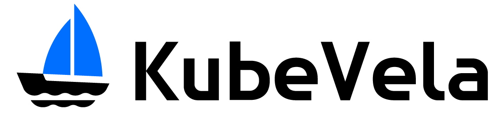

Overview
For developers and operators, KubeVela, as an out-of-box Cloud Native Application Management Platform, provides numerous workloads and operation tooling for application defining, deployment, scaling, traffic, rollout, routing, monitoring, logging, alerting, CICD and so on.
For platform builders, KubeVela, as a highly extensible PaaS/Serverless Core, provides pluggable capabilities, an elegant way to integrate any Workloads and Traits.
Get Started
Check out Get Started to try KubeVela.
Explore Cli docs to get a quick glance of the power of KubeVela.
Community
Updating…
Support or Contact
Having trouble with KubeVela? File an issue, or contact us directly Twitter or Gitter